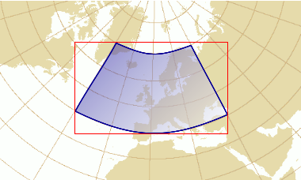

Class Envelopes
-
public final class Envelopes extends Static
Transforms envelopes to new Coordinate Reference Systems, and miscellaneous utilities.Envelope transformationsAlltransform(…)methods in this class take in account the curvature of the transformed shape. For example the shape of a geographic envelope (figure below on the left side) is not rectangular in a conic projection (figure below on the right side). In order to get the envelope represented by the red rectangle, projecting the four corners of the geographic envelope is not sufficient since we would miss the southerner part.
Apache SIS tries to detect the curvature by transforming intermediate points in addition to the corners. While optional, it is strongly recommended that allExample of curvature induced by a map projection Envelope before map projection Shape of the projected envelope 
 MathTransformimplementations involved in the operation (directly or indirectly) support derivative, for more accurate calculation of curve extremum. This is the case of most Apache SIS implementations.The
transform(…)methods in this class expect an arbitraryEnvelopewith one of the following arguments:MathTransform,CoordinateOperationorCoordinateReferenceSystem. The recommended method is the one expecting aCoordinateOperationobject, since it contains sufficient information for handling the cases of envelopes that encompass a pole. The method expecting aCoordinateReferenceSystemobject is merely a convenience method that infers the coordinate operation itself, but at the cost of performance if the same operation needs to be applied on many envelopes.
-
-
Method Summary
All Methods Static Methods Concrete Methods Modifier and Type Method Description static Envelopecompound(Envelope... components)Puts together a list of envelopes, each of them using an independent coordinate reference system.static CoordinateOperationfindOperation(Envelope source, Envelope target)Finds a mathematical operation from the CRS of the given source envelope to the CRS of the given target envelope.static EnvelopefromWKT(CharSequence wkt)Returns the bounding box of a geometry defined in Well Known Text (WKT) format.static GeneralEnvelopeintersect(Envelope... envelopes)Computes the intersection of all given envelopes, transforming them to a common CRS if necessary.static StringtoPolygonWKT(Envelope envelope)Formats the given envelope as aPOLYGONelement in the Well Known Text (WKT) format.static StringtoString(Envelope envelope)Formats the given envelope as aBOXelement.static Envelopetransform(Envelope envelope, CoordinateReferenceSystem targetCRS)Transforms the given envelope to the specified CRS.static GeneralEnvelopetransform(CoordinateOperation operation, Envelope envelope)Transforms an envelope using the given coordinate operation.static GeneralEnvelopetransform(MathTransform transform, Envelope envelope)Transforms an envelope using the given math transform.static GeneralEnvelopeunion(Envelope... envelopes)Computes the union of all given envelopes, transforming them to a common CRS if necessary.
-
-
-
Method Detail
-
compound
public static Envelope compound(Envelope... components) throws FactoryException
Puts together a list of envelopes, each of them using an independent coordinate reference system. The dimension of the returned envelope is the sum of the dimension of all components. If all components have a coordinate reference system, then the returned envelope will have a compound coordinate reference system.- Parameters:
components- the envelopes to aggregate in a single envelope, in the given order.- Returns:
- the aggregation of all given envelopes.
- Throws:
FactoryException- if the geodetic factory failed to create the compound CRS.- Since:
- 1.0
- See Also:
CRS.compound(CoordinateReferenceSystem...),MathTransforms.compound(MathTransform...)
-
union
public static GeneralEnvelope union(Envelope... envelopes) throws TransformException
Computes the union of all given envelopes, transforming them to a common CRS if necessary. If all envelopes use the same CRS (ignoring metadata) or if the CRS of all envelopes isnull, then the union is computed without transforming any envelope. Otherwise all envelopes are transformed to a common CRS before union is computed. The CRS of the returned envelope may different than the CRS of all given envelopes.- Parameters:
envelopes- the envelopes for which to compute union. Null elements are ignored.- Returns:
- union of given envelopes, or
nullif the given array does not contain non-null elements. - Throws:
TransformException- if this method can not determine a common CRS, or if a transformation failed.- Since:
- 1.0
- See Also:
GeneralEnvelope.add(Envelope)
-
findOperation
public static CoordinateOperation findOperation(Envelope source, Envelope target) throws FactoryException
Finds a mathematical operation from the CRS of the given source envelope to the CRS of the given target envelope. For non-null georeferenced envelopes, this method is equivalent to the following code withareaOfInterestcomputed as the union of the two envelopes:
If at least one envelope is null or has no CRS, then this method returnsreturn CRS.findOperation(CoordinateReferenceSystem, CoordinateReferenceSystem, GeographicBoundingBox) CRS.findOperation(source.getCoordinateReferenceSystem(), target.getCoordinateReferenceSystem(), areaOfInterest)null.- Parameters:
source- the source envelope, ornull.target- the target envelope, ornull.- Returns:
- the mathematical operation from
sourceCRS totargetCRS, ornullif at least one argument is null or has no CRS. - Throws:
OperationNotFoundException- if no operation was found between the given pair of CRS.FactoryException- if the operation can not be created for another reason.- Since:
- 1.0
- See Also:
CRS.findOperation(CoordinateReferenceSystem, CoordinateReferenceSystem, GeographicBoundingBox)
-
intersect
public static GeneralEnvelope intersect(Envelope... envelopes) throws TransformException
Computes the intersection of all given envelopes, transforming them to a common CRS if necessary. If all envelopes use the same CRS (ignoring metadata) or if the CRS of all envelopes isnull, then the intersection is computed without transforming any envelope. Otherwise all envelopes are transformed to a common CRS before intersection is computed. The CRS of the returned envelope may different than the CRS of all given envelopes.- Parameters:
envelopes- the envelopes for which to compute intersection. Null elements are ignored.- Returns:
- intersection of given envelopes, or
nullif the given array does not contain non-null elements. - Throws:
TransformException- if this method can not determine a common CRS, or if a transformation failed.- Since:
- 1.0
- See Also:
GeneralEnvelope.intersect(Envelope)
-
transform
public static Envelope transform(Envelope envelope, CoordinateReferenceSystem targetCRS) throws TransformException
Transforms the given envelope to the specified CRS. If any argument is null, or if the envelope CRS is null or the same instance than the given target CRS, then the given envelope is returned unchanged. Otherwise a new transformed envelope is returned.Performance tipIf there is many envelopes to transform with the same source and target CRS, then it is more efficient to get theCoordinateOperationorMathTransforminstance once and invoke one of the otherstransform(…)methods.- Parameters:
envelope- the envelope to transform (may benull).targetCRS- the target CRS (may benull).- Returns:
- a new transformed envelope, or directly
envelopeif no change was required. - Throws:
TransformException- if a transformation was required and failed.- Since:
- 0.5
-
transform
public static GeneralEnvelope transform(MathTransform transform, Envelope envelope) throws TransformException
Transforms an envelope using the given math transform. The transformation is only approximated: the returned envelope may be bigger than necessary, or smaller than required if the bounding box contains a pole. The coordinate reference system of the returned envelope will be null.LimitationThis method can not handle the case where the envelope contains the North or South pole, or when it crosses the ±180° longitude, becauseMathTransformdoes not carry sufficient information. For a more robust envelope transformation, usetransform(CoordinateOperation, Envelope)instead.- Parameters:
transform- the transform to use.envelope- envelope to transform, ornull. This envelope will not be modified.- Returns:
- the transformed envelope, or
nullifenvelopewas null. - Throws:
TransformException- if a transform failed.- Since:
- 0.5
- See Also:
transform(CoordinateOperation, Envelope)
-
transform
public static GeneralEnvelope transform(CoordinateOperation operation, Envelope envelope) throws TransformException
Transforms an envelope using the given coordinate operation. The transformation is only approximated: the returned envelope may be bigger than the smallest possible bounding box, but should not be smaller in most cases.This method can handle the case where the envelope contains the North or South pole, or when it cross the ±180° longitude.
Note: If the envelope CRS is non-null, then the caller should ensure that the operation source CRS is the same than the envelope CRS. In case of mismatch, this method transforms the envelope to the operation source CRS before to apply the operation. This extra step may cause a lost of accuracy. In order to prevent this method from performing such pre-transformation (if not desired), callers can ensure that the envelope CRS isnullbefore to call this method.- Parameters:
operation- the operation to use.envelope- envelope to transform, ornull. This envelope will not be modified.- Returns:
- the transformed envelope, or
nullifenvelopewas null. - Throws:
TransformException- if a transform failed.- Since:
- 0.5
- See Also:
transform(MathTransform, Envelope)
-
fromWKT
public static Envelope fromWKT(CharSequence wkt) throws FactoryException
Returns the bounding box of a geometry defined in Well Known Text (WKT) format. This method does not check the consistency of the provided WKT. For example it does not check that every points in aLINESTRINGhave the same dimension. However this method ensures that the parenthesis are balanced, in order to catch some malformed WKT.Example:
BOX(-180 -90, 180 90)(not really a geometry, but understood by many software products)POINT(6 10)MULTIPOLYGON(((1 1, 5 1, 1 5, 1 1),(2 2, 3 2, 3 3, 2 2)))GEOMETRYCOLLECTION(POINT(4 6),LINESTRING(3 8,7 10))
GeneralEnvelope(CharSequence)for more information about the parsing rules.- Parameters:
wkt- theBOX,POLYGONor other kind of element to parse.- Returns:
- the envelope of the given geometry.
- Throws:
FactoryException- if the given WKT can not be parsed.- See Also:
toString(Envelope),CRS.fromWKT(String),org.apache.sis.io.wkt
-
toString
public static String toString(Envelope envelope)
Formats the given envelope as aBOXelement. The output is like below, where n is the number of dimensions (omitted if equals to 2):BOXnD(lower corner,upper corner)Note: TheThe string returned by this method can be parsed by theBOXelement is not part of the standard Well Known Text (WKT) format. However it is understood by many software libraries, for example GDAL and PostGIS.GeneralEnvelopeconstructor.- Parameters:
envelope- the envelope to format.- Returns:
- this envelope as a
BOXorBOX3D(most typical dimensions) element. - See Also:
fromWKT(CharSequence),org.apache.sis.io.wkt
-
toPolygonWKT
public static String toPolygonWKT(Envelope envelope) throws IllegalArgumentException
Formats the given envelope as aPOLYGONelement in the Well Known Text (WKT) format.POLYGONcan be used as an alternative toBOXwhen the element needs to be considered as a standard WKT geometry.The string returned by this method can be parsed by the
GeneralEnvelopeconstructor.- Parameters:
envelope- the envelope to format.- Returns:
- the envelope as a
POLYGONin WKT format. - Throws:
IllegalArgumentException- if the given envelope can not be formatted.- See Also:
org.apache.sis.io.wkt
-
-